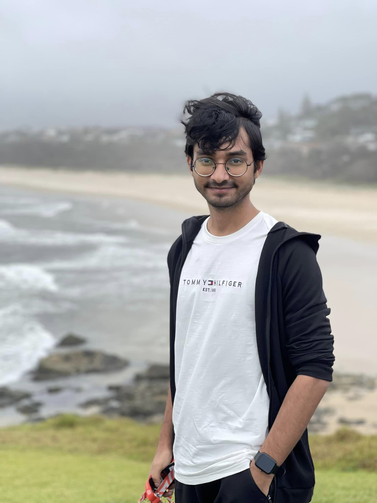
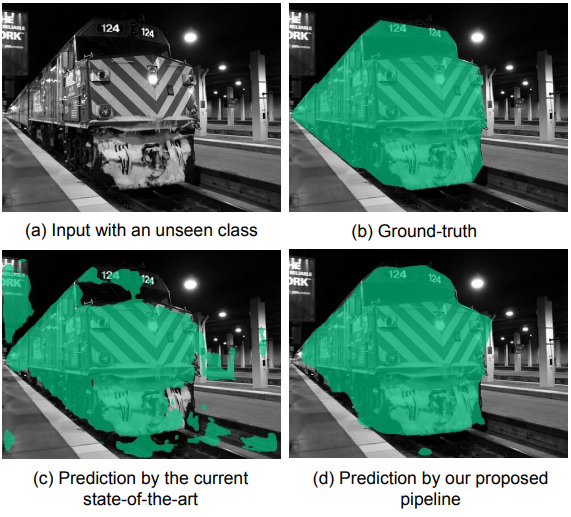
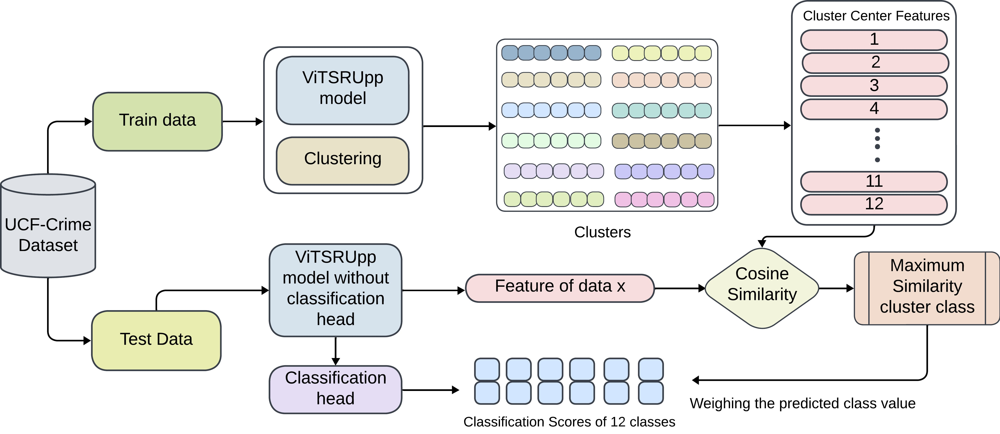
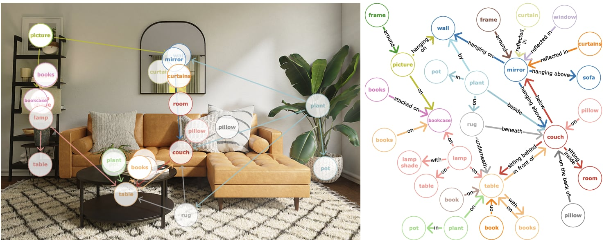
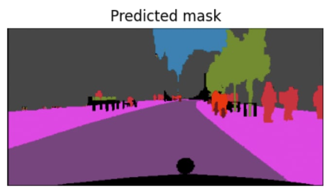
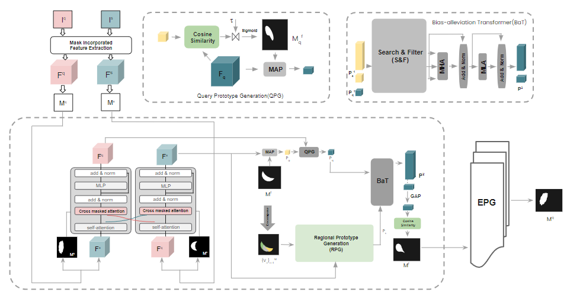
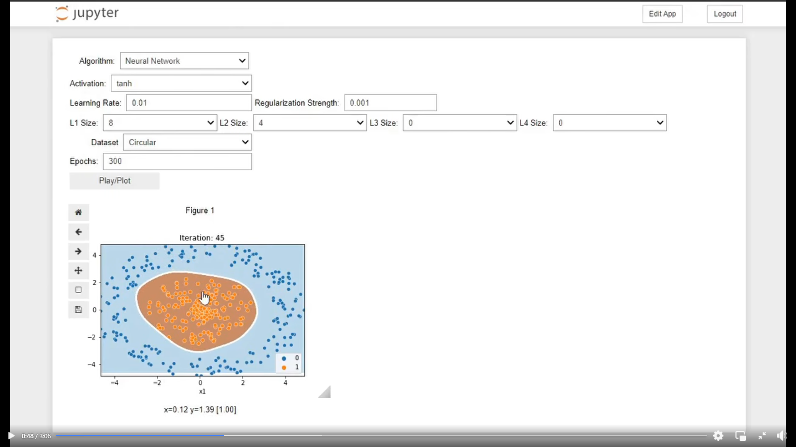
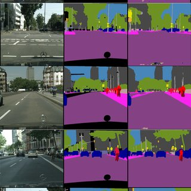
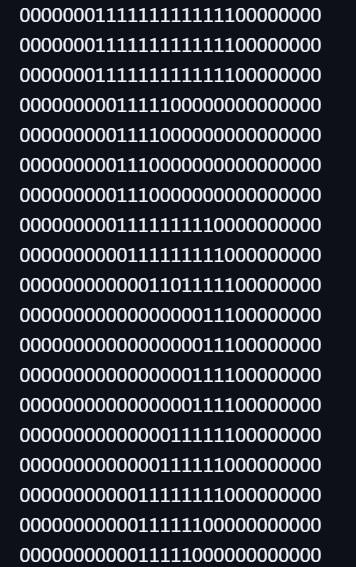

|
I am Tauseef Tajwar, a passionate researcher and educator with a deep interest in Computer Vision and Deep Learning. I completed my BSc. in Computer Science and Engineering (CSE) from Islamic University of Technology (IUT) with a CGPA of 3.95/4.00. My academic journey has been enriched by multiple research projects, where I've taken on roles ranging from first author to co-supervisor, exploring areas like zero-shot semantic segmentation, video anomaly detection, and visual relationship detection. Currently, I am a lecturer at United International University, where I teach Artificial Intelligence, Programming for Data Science, Fundamentals of Data Science, and Object-Oriented Programming. I also play an active role in the STEM community, having been one of the inaugurating members of the BSc. in Data Science program at the university—Bangladesh's first undergraduate program in this field, and a reviewer at CVPR 2024. Beyond academia, I have practical experience in the industry as a Research and Development Executive at Aamra Networks Limited, where I developed cutting-edge computer vision applications, including a Bengali license plate detection system and a facial recognition-based attendance system. When I am not immersed in work, I enjoy indulging in art, music, reading, and football. I am actively looking for PhD positions to fulfill my dream of becoming an established Computer Vision/Deep Learning personnel. My goal is to pursue a career in research-based academia.
Work email:
tauseef [at] cse [dot] uiu [dot] ac [dot] bd
|

Photo taken at Lighthouse Beach, Port Macquarie, while I was attending DICTA 2023 in Australia. |
News and UpdatesApril, 2024: April, 2024: November, 2023: September, 2023: July, 2023: |
Research Experience
I am primarily interested in making machines that understand the world around
us. This led me to work in interested
fields including Semantic segmentation, zero-shot semantic segmentation,
visual relationship detection, and implicit
neural networks. I also have experience in AI-generated art having worked with
neural style transfer, GANs, diffusion
models, and VQ-VAEs.
|
Completed
|  |
Improving Zero-Shot Semantic Segmentation using Dynamic KernelsTauseef Tajwar, Muftiqur Rahman, Taukir Azam Chowdhury, Sabbir Ahmed, Moshiur Farazi, Md Hasanul Kabir International Conference on Digital Image Computing: Techniques and Applications (DICTA), 2023 paper Introduced a new decoupled pipeline to perform zero-shot semantic segmentation using a Dynamic Kernel-based class-agnostic mask generator and a CLIP classifier. Hypothesized and proved that using Dynamic Kernels improves the model’s generalization and knowledge transfer abilities. Achieved state-of-the-art performance on Pascal VOC (+6.4 hIoU) and COCO-Stuff (+0.9 hIoU). Supervisor:Dr. Hasanul Kabir |
|  |
Vision Transformer Embedded Video Anomaly Detection using Attention Driven RecurrenceUmmay Maria Muna, Shanta Biswas, Syed Abu Ammar Muhammad Zarif, Tauseef Tajwar, Swakkhar Shatabda Image and Vision Computing, (IVC), 2024 Developed a model utilizing a custom window-based SRU++ model to detect anomalous behavior from CCTV footage. Employed a frame cluster-based attention mechanism to identify frames more likely to contain anomalous behavior. Model achieved state-of-the-art performance on the UCF Crime, RWF-2K, and SCVD datasets. Under review at Image and Vision Computing (IVC). Supervisor:Dr. Swakkhar Shatabda |
Ongoing
|  |
Visual Relationship Detection using Vector QuantizationRole: Project Lead Developed a new pipeline that leverages vector quantization to generate scene graphs and learn object interactions. Introduced a novel technique named "non-background masking" that utilizes the model’s strong detection capabilities to discard invalid relations. The pipeline showed promising results upon initial experiments on the Visual Genome dataset. Supervisor:Dr. Moshiur Farazi |
|  |
Semantic Segmentation using Implicit Graph Neural NetworksRole: Project Lead Introduced a feasible graph representation of images via dividing images into patches (nodes) and connecting related patches via an edge based on their K Nearest Neighbors. A well-posed function is used to represent the graph neural network which is solved implicitly to perform semantic segmentation in constant memory. Model showed competitive performance as the current state-of-the-art on a small subset of CityScapes. Supervisor:Dr. Moshiur Farazi |
|  |
Enhancing Few-Shot Medical Image Segmentation with Refined PrototypesRole: Co-supervisor Interaction between query and support features can enhance existing methods’ representation abilities resulting in more precise global prototype predictions. Experiments are being done on the ABD-MRI, ABD-CT, and CMR datasets. Further experiments are required to prove the hypothesis. Supervisor:Sabbir Ahmed |
Projects |
|  |
ML Algorithm VisualizerTools: Jupyter, ScikitLearn, 2022 code An interactive notebook containing visualizations of 9 of the most popular machine learning algorithms taught in universities. Project Goal: To build a notebook that can be used as a tool to visually teach fundamental machine learning algorithms at university. |
|  |
Semantic Segmentation using U-NetTools: Pytorch, 2021 code A personal implementation of the U-Net paper. Trained on CityScapes. Project Goal: To understand the technical details of one of the most popular semantic segmentation models, U-Net. |

|
Neural Style TransferTools: Tensorflow, 2020 code Implementation of a simple neural style transfer (NST) algorithm. Project Goal: To understand how NST works to generate AI art. |
|  |
Handwritten Digit Classifier using C++Tools: C++, 2020 code Implemented a simple neural network using C++ to train on the MNIST dataset. Project Goal: To thoroughly understand the inner workings of a neural network. No external libraries were used. |
Education
|
Work Experience
|
Honors and Awards
|
|
Last updated: September 2, 2024 |